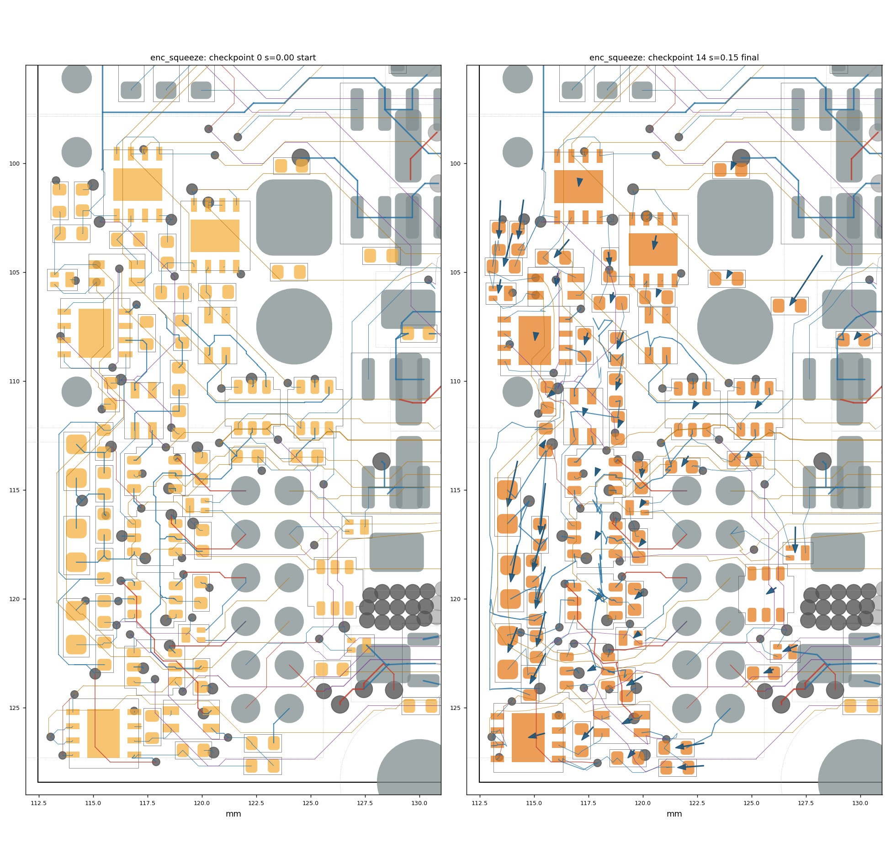
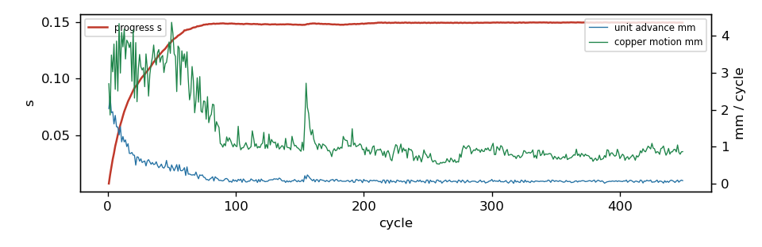

449 cycles in 1301.6 s, progress s = 0.1496; 0/0 ghosts born; 56 parts moved; 40/192 reroutes verified in 12 rounds. Gate: 15/15 checkpoints pass (baseline 3 violations); length caps hit: 0; check_sync: True.
Region [112.4, 96.0, 130.5, 128.5]; rules clearance 0.1 mm, hole 0.254, edge 0.3, guard 0.015. 57 movable parts, 934 dynamic segments, 1044 nodes, 0 ghosts. Orange pads = movable parts (dark orange = moved); grey = fixed; red = ghosts at their current scale; blue arrows = part displacement. Copper by layer: F red, B blue, In1 green, In2 purple, In3 brown, In4 teal; static copper grey.


| step | s | tag | unconnected | new_violations | static_missing | fixed_moved | ok | new_desc |
|---|---|---|---|---|---|---|---|---|
| 0 | 0.0 | start | 103 | 0 | 0 | [] | True | [] |
| 1 | 0.101 | 103 | 0 | 0 | [] | True | [] | |
| 2 | 0.148 | reroute | 103 | 0 | 0 | [] | True | [] |
| 3 | 0.148 | reroute | 103 | 0 | 0 | [] | True | [] |
| 4 | 0.148 | reroute | 103 | 0 | 0 | [] | True | [] |
| 5 | 0.15 | reroute | 103 | 0 | 0 | [] | True | [] |
| 6 | 0.149 | reroute | 103 | 0 | 0 | [] | True | [] |
| 7 | 0.149 | reroute | 103 | 0 | 0 | [] | True | [] |
| 8 | 0.149 | reroute | 103 | 0 | 0 | [] | True | [] |
| 9 | 0.15 | reroute | 103 | 0 | 0 | [] | True | [] |
| 10 | 0.15 | reroute | 103 | 0 | 0 | [] | True | [] |
| 11 | 0.15 | reroute | 103 | 0 | 0 | [] | True | [] |
| 12 | 0.15 | reroute | 103 | 0 | 0 | [] | True | [] |
| 13 | 0.15 | reroute | 103 | 0 | 0 | [] | True | [] |
| 14 | 0.15 | final | 103 | 0 | 0 | [] | True | [] |
none
| ref | dx | dy | mm | group |
|---|---|---|---|---|
| R104 | -1.5 | 2.3 | 2.746 | |
| C67 | -0.254 | 2.344 | 2.358 | |
| C74 | -0.581 | 2.153 | 2.23 | |
| C69 | -0.464 | 2.098 | 2.149 | |
| R96 | -0.442 | 1.917 | 1.967 | |
| C63 | -0.25 | 1.801 | 1.818 | |
| R91 | -0.079 | 1.752 | 1.754 | |
| C75 | -0.317 | 1.689 | 1.718 | |
| C68 | -0.402 | 1.612 | 1.661 | |
| R95 | -0.716 | 1.395 | 1.568 | |
| R90 | -0.394 | 1.515 | 1.565 | |
| R87 | -1.308 | 0.216 | 1.326 | |
| C70 | -0.435 | 1.145 | 1.225 | |
| R86 | -1.207 | 0.085 | 1.21 | |
| D27 | -0.014 | 1.194 | 1.194 | |
| R85 | -0.685 | 0.832 | 1.078 | |
| R93 | -0.288 | 0.8 | 0.85 | |
| C73 | -0.732 | 0.422 | 0.845 | |
| R83 | -0.532 | 0.609 | 0.809 | |
| U19 | -0.759 | 0.195 | 0.784 | |
| D25 | -0.689 | 0.295 | 0.749 | |
| U20 | -0.128 | 0.638 | 0.651 | |
| D26 | -0.115 | 0.634 | 0.644 | |
| C62 | 0.076 | 0.634 | 0.639 | |
| FL4 | -0.095 | 0.602 | 0.609 | |
| C71 | -0.31 | 0.483 | 0.574 | |
| R82 | -0.151 | 0.552 | 0.572 | |
| R89 | -0.185 | 0.53 | 0.561 | |
| U31 | -0.455 | 0.297 | 0.543 | |
| FL1 | -0.482 | 0.221 | 0.53 | |
| R92 | -0.132 | 0.484 | 0.502 | |
| C111 | -0.45 | 0.172 | 0.482 | |
| C61 | -0.3 | 0.357 | 0.466 | |
| C65 | -0.334 | 0.304 | 0.452 | |
| C64 | -0.046 | 0.424 | 0.426 | |
| U27 | -0.376 | 0.181 | 0.417 | |
| C16 | -0.25 | 0.295 | 0.387 | |
| C72 | -0.225 | 0.284 | 0.362 | |
| U18 | -0.048 | 0.353 | 0.356 | |
| R99 | -0.152 | 0.309 | 0.344 |
16 more not shown
| net | region_mm | grown_mm | growth_pct | allow_mm | cap_mm | at_cap |
|---|---|---|---|---|---|---|
| /ENC_B_TRX_A | 0.61 | 0.852 | 139.8 | 0.5 | 2.0 | |
| /ENC_D_TRX_B | 2.91 | 1.161 | 39.9 | 0.5 | 2.0 | |
| /ENC_D_TRX_A | 1.79 | 0.658 | 36.6 | 0.5 | 2.0 | |
| Vdrive | 41.69 | 12.778 | 30.6 | 12.506 | 41.686 | |
| /ENC_B_TRX_B | 2.09 | 0.496 | 23.8 | 0.5 | 2.0 | |
| GND | 77.3 | 14.198 | 18.4 | None | None | |
| /HALL1 | 25.07 | 4.128 | 16.5 | 5.013 | 12.533 | |
| /HALL2 | 23.39 | 3.49 | 14.9 | 4.677 | 11.693 | |
| /HALL3 | 31.69 | 3.843 | 12.1 | 6.338 | 15.844 | |
| /ENC_A_TRX_A | 2.64 | 0.307 | 11.6 | 0.5 | 2.0 | |
| /ENC_C_N_SW | 7.89 | 0.794 | 10.1 | 0.789 | 2.0 | |
| /ENC_D_N | 36.05 | 3.612 | 10.0 | 3.605 | 5.407 | |
| /ENC_B_N_SW | 11.77 | 1.166 | 9.9 | 1.177 | 2.0 | |
| +3V3 | 119.55 | 11.827 | 9.9 | 35.864 | 119.547 | |
| /I2C_SCL | 14.28 | 1.283 | 9.0 | 2.856 | 7.139 | |
| /MOT_TH | 14.36 | 0.986 | 6.9 | 2.872 | 7.179 | |
| /ENC_B_SW | 28.29 | 1.924 | 6.8 | 5.657 | 14.144 | |
| /ENC_C_DATA | 19.24 | 0.888 | 4.6 | 3.848 | 9.62 | |
| /I2C_SDA | 23.14 | 1.023 | 4.4 | 4.629 | 11.571 | |
| /ENC_A_N_SW | 8.72 | 0.355 | 4.1 | 0.872 | 2.0 | |
| /ENC_B_N | 6.6 | 0.245 | 3.7 | 0.66 | 2.0 | |
| /ENC_A_DATA | 32.27 | 1.073 | 3.3 | 6.455 | 16.136 | |
| /ENC_B_DATA | 29.04 | 0.903 | 3.1 | 5.807 | 14.518 | |
| /ENC_D_P | 31.86 | 0.886 | 2.8 | 3.186 | 4.779 | |
| /ENC_B_P | 6.85 | 0.183 | 2.7 | 0.685 | 2.0 | |
| /H2_SW | 17.68 | 0.455 | 2.6 | 3.536 | 8.841 | |
| /ENC_C_SW | 16.87 | 0.375 | 2.2 | 3.374 | 8.435 | |
| /ENC_C_P | 16.0 | 0.325 | 2.0 | 1.6 | 2.4 | |
| /I2C_SW | 33.7 | 0.662 | 2.0 | 6.741 | 16.851 | |
| /ENC_A_SW | 26.35 | 0.333 | 1.3 | 5.27 | 13.175 | |
| /EXT_ANALOG_SW | 20.72 | 0.216 | 1.0 | 4.144 | 10.359 | |
| /ENC_A_P | 6.02 | 0.036 | 0.6 | 0.602 | 2.0 | |
| /ENC_D_SW | 19.14 | 0.082 | 0.4 | 3.828 | 9.571 | |
| /ENC_D_DATA | 22.92 | 0.048 | 0.2 | 4.583 | 11.458 | |
| A_SENSE | 13.82 | 0.014 | 0.1 | 1.382 | 2.764 | |
| /EXT_ANALOG1 | 30.41 | -0.04 | -0.1 | 6.082 | 15.205 | |
| /H1_SW | 18.39 | -0.025 | -0.1 | 3.677 | 9.194 | |
| /EXT_ANALOG2 | 26.56 | -0.041 | -0.1 | 5.312 | 13.279 | |
| /H3_SW | 26.96 | -0.045 | -0.2 | 5.392 | 13.479 | |
| /ENC_C_P_SW | 8.38 | -0.062 | -0.8 | 0.838 | 2.0 |
6 more not shown
| unit | hard_walled | blocker | net | ref | margin | floor | pos |
|---|---|---|---|---|---|---|---|
| C73 | dyn_via | GND | -0.0309 | 0.0 | [119.698, 124.112] | ||
| C73 | courtyard | U27 | -0.05 | 0.003 | |||
| R106 | yes | pad | H4. | -0.1866 | -0.1708 | [130.0, 128.4] | |
| R106 | yes | pad | H4. | -0.1863 | -0.1821 | [130.0, 128.4] | |
| R92 | dyn_seg | GND | -0.0322 | -0.005 | [117.842, 107.38] | ||
| R92 | dyn_seg | GND | -0.0403 | -0.005 | [117.842, 107.38] | ||
| R92 | dyn_seg | GND | -0.0403 | 0.0093 | [117.842, 107.38] | ||
| R92 | dyn_seg | GND | -0.0193 | 0.015 | [117.842, 107.38] | ||
| U21 | dyn_seg | +3V3 | 0.0039 | 0.015 | [115.431, 99.287] | ||
| U21 | dyn_seg | +3V3 | 0.0039 | 0.015 | [115.431, 99.287] | ||
| U21 | dyn_seg | /ENC_D_TRX_B | 0.0093 | 0.015 | [116.429, 103.038] | ||
| U21 | dyn_seg | /ENC_D_TRX_B | 0.0093 | 0.015 | [116.429, 103.038] | ||
| U23 | dyn_seg | Vdrive | -0.0201 | 0.015 | [118.072, 118.624] | ||
| U23 | dyn_seg | Vdrive | -0.0201 | 0.015 | [118.072, 118.624] | ||
| U23 | dyn_seg | Vdrive | -0.0078 | 0.015 | [118.072, 118.624] | ||
| U23 | dyn_seg | Vdrive | -0.011 | 0.015 | [118.072, 118.624] | ||
| grp:D23 | dyn_via | /HALL2 | -0.0319 | -0.0123 | [117.402, 118.148] | ||
| grp:D23 | dyn_via | GND | 0.0015 | 0.015 | [116.295, 117.122] | ||
| grp:D23 | dyn_via | GND | -0.0055 | 0.015 | [116.295, 117.122] | ||
| grp:D23 | dyn_via | GND | -0.0055 | 0.015 | [116.295, 117.122] | ||
| grp:FL3 | dyn_seg | /ENC_C_N_SW | -0.0539 | -0.005 | [120.444, 108.228] | ||
| grp:FL3 | dyn_seg | /ENC_C_N_SW | -0.0587 | -0.0101 | [120.276, 108.058] | ||
| grp:FL3 | dyn_seg | /ENC_C_N_SW | -0.0539 | -0.005 | [120.346, 108.396] | ||
| grp:FL3 | dyn_seg | GND | -0.0308 | 0.0 | [118.243, 108.525] | ||
| U22 | dyn_via | GND | -0.0317 | 0.015 | [117.271, 114.262] | ||
| U25 | dyn_seg | /ENC_C_P_SW | -0.0348 | 0.015 | [121.673, 111.0] | ||
| U25 | dyn_seg | /ENC_C_P_SW | -0.0348 | 0.015 | [121.673, 111.0] | ||
| U25 | dyn_seg | /ENC_C_P_SW | -0.027 | 0.015 | [121.673, 111.0] | ||
| U25 | dyn_seg | /ENC_C_P_SW | -0.0042 | 0.015 | [121.673, 111.0] | ||
| D27 | courtyard | U31 | -0.05 | 0.003 | |||
| U24 | dyn_seg | /ENC_C_P_SW | 0.0089 | 0.015 | [124.332, 110.981] | ||
| U24 | dyn_seg | /ENC_C_P_SW | -0.0164 | 0.015 | [124.332, 110.981] | ||
| U24 | dyn_seg | /ENC_C_P_SW | -0.0243 | 0.015 | [124.332, 110.981] | ||
| U24 | dyn_seg | /ENC_C_P_SW | -0.0243 | 0.015 | [124.332, 110.981] | ||
| C66 | dyn_seg | GND | -0.0015 | 0.015 | [124.114, 114.156] | ||
| C66 | dyn_seg | GND | -0.0145 | 0.015 | [124.114, 114.156] | ||
| C66 | dyn_seg | GND | -0.0246 | 0.015 | [124.114, 114.156] | ||
| C66 | dyn_seg | GND | -0.0246 | 0.015 | [124.114, 114.156] | ||
| R88 | dyn_via | /ENC_A_SW | -0.0128 | 0.015 | [118.331, 113.197] | ||
| R88 | dyn_via | /ENC_A_SW | -0.027 | 0.015 | [118.331, 113.197] | ||
| R88 | dyn_via | /ENC_A_SW | -0.027 | 0.015 | [118.331, 113.197] | ||
| R88 | dyn_via | /ENC_A_SW | -0.0114 | 0.015 | [118.331, 113.197] | ||
| U26 | dyn_via | /HALL2 | -0.0581 | -0.0123 | [117.402, 118.148] | ||
| U26 | dyn_via | GND | 0.0101 | 0.015 | [116.295, 117.122] | ||
| U26 | dyn_via | GND | 0.0072 | 0.015 | [116.295, 117.122] | ||
| U26 | dyn_via | GND | 0.0072 | 0.015 | [116.295, 117.122] | ||
| grp:D24 | dyn_seg | /ENC_B_N | -0.0263 | 0.0 | [120.214, 121.864] | ||
| grp:D24 | dyn_via | /I2C_SDA | -0.0263 | 0.015 | [117.289, 124.101] | ||
| D23 | courtyard | U26 | -0.05 | 0.003 | |||
| grp:C66 | dyn_seg | GND | -0.0129 | 0.015 | [124.114, 114.156] | ||
| grp:C66 | dyn_seg | GND | -0.0238 | 0.015 | [124.114, 114.156] | ||
| grp:C66 | dyn_seg | GND | -0.0238 | 0.015 | [124.114, 114.156] | ||
| grp:C66 | dyn_seg | GND | -0.0238 | 0.015 | [124.114, 114.156] | ||
| C112 | yes | pad | /C_N | J2.1 | 0.0129 | 0.015 | [124.25, 102.5] |
| C112 | yes | pad | /C_N | J2.1 | 0.0118 | 0.015 | [124.25, 102.5] |
| C112 | yes | pad | /C_N | J2.1 | -0.0196 | 0.015 | [124.25, 102.5] |
| C112 | yes | pad | /C_N | J2.1 | -0.0306 | 0.015 | [124.25, 102.5] |
| FL3 | dyn_seg | /ENC_C_N_SW | -0.0447 | -0.005 | [120.444, 108.228] | ||
| FL3 | dyn_seg | /ENC_C_N_SW | -0.0521 | -0.0101 | [120.276, 108.058] | ||
| FL3 | dyn_seg | /ENC_C_N_SW | -0.0447 | -0.005 | [120.346, 108.396] |
179 more not shown
| mover | blocker | what | hits |
|---|---|---|---|
| C112 | pad | J2.1 [/C_N] | 6670 |
| U31 | pad | J12.6 [/ENC_D_P] | 5664 |
| R99 | pad | J2.2 [/D] | 4423 |
| C111 | pad | J12.4 [/V_ENC] | 3956 |
| C71 | pad | J12.11 [/ENC_A_P] | 3939 |
| U31 | pad | J12.8 [/ENC_D_N] | 3923 |
| R104 | pad | J2.2 [/D] | 3102 |
| node1126 | pad | J2. | 2658 |
| node1125 | pad | J2. | 2210 |
| node1053 | pad | J12.12 [/MOT_TH] | 1780 |
| node1054 | pad | J12.12 [/MOT_TH] | 1338 |
| R106 | pad | H4. | 898 |
| R86 | board_edge | 848 | |
| node266 | board_edge | 810 | |
| R93 | dyn_seg | /ENC_C_N_SW | 798 |
| node781 | board_edge | 796 | |
| node253 | board_edge | 770 | |
| C16 | static_track | GND | 438 |
| D25 | pad | D21.2 [GND] | 429 |
| node1147 | board_edge | 421 | |
| node1142 | board_edge | 379 | |
| node1143 | board_edge | 378 | |
| node1144 | board_edge | 378 | |
| node1141 | board_edge | 377 | |
| node1145 | board_edge | 376 |
{
"name": "enc_squeeze",
"board": "/home/sequoia/pcb/rp2350-motor-controller-lean-jiggle/hardware/tools/settle/configs/data/boards/enc_v035.kicad_pcb",
"region": [
112.4,
96.0,
130.5,
128.5
],
"rules": {
"guard": 0.015
},
"locked": {
"sides": [
"F"
],
"refs": [
"J1",
"J2",
"J12",
"H3",
"H4",
"U5",
"U9",
"U10"
],
"nets": [
"^/USB_D",
"^/CAN0_"
],
"rects": [
[
130.5,
81.9,
149.6,
128.6
]
]
},
"mobility": {
"default": 1.0
},
"groups": {},
"drive": {
"inflate": [],
"shove": [
{
"rect": [
112.4,
96.0,
130.5,
128.5
],
"toward": [
112.5,
128.4
],
"mm": 5.0
}
]
},
"step": 0.05,
"snapshots": 10,
"cycles": 500,
"data": "/home/sequoia/pcb/rp2350-motor-controller-lean-jiggle/hardware/tools/settle/configs/data/enc_squeeze"
}
{
"default": {
"k": 0.5,
"allow": 0.2,
"cap": 0.5,
"allow_mm": 0.5,
"cap_mm": 2.0
},
"classes": {
"VMOT": {
"k": 0.2,
"allow": 0.3,
"cap": 1.0,
"allow_mm": 1.0,
"cap_mm": 6.0
},
"power": {
"k": 0.2,
"allow": 0.3,
"cap": 1.0,
"allow_mm": 1.0,
"cap_mm": 6.0
},
"usb_5A": {
"k": 0.2,
"allow": 0.3,
"cap": 1.0,
"allow_mm": 1.0,
"cap_mm": 6.0
},
"low_power": {
"k": 0.2,
"allow": 0.3,
"cap": 1.0,
"allow_mm": 1.0,
"cap_mm": 6.0
}
},
"nets": {
"^GND": {
"k": 0.0,
"allow": 1000000000.0,
"cap": 1000000000.0
},
"^(VMOT|Vdrive|VBUS|\\+3V3|\\+1V1|\\+5V_ISO|/V_ENC|/V_SW)$": {
"k": 0.2,
"allow": 0.3,
"cap": 1.0,
"allow_mm": 1.0,
"cap_mm": 6.0
},
"^Net-\\(U(1|6|7|12)-(HO|LO|VB)\\)$": {
"k": 4.0,
"allow": 0.0,
"cap": 0.05,
"allow_mm": 0.0,
"cap_mm": 0.3
},
"^/2[ABCD]G[HL]$": {
"k": 4.0,
"allow": 0.0,
"cap": 0.05,
"allow_mm": 0.0,
"cap_mm": 0.3
},
"^Net-\\(Q[1-4]-[BE]\\)$": {
"k": 4.0,
"allow": 0.0,
"cap": 0.05,
"allow_mm": 0.0,
"cap_mm": 0.3
},
"^Net-\\((R(24|59|62|67|70)|D\\d+)-": {
"k": 2.0,
"allow": 0.05,
"cap": 0.15,
"allow_mm": 0.2,
"cap_mm": 0.8
},
"^/USB_D": {
"k": 4.0,
"allow": 0.0,
"cap": 0.02,
"allow_mm": 0.0,
"cap_mm": 0.1
},
"^/CAN0_": {
"k": 4.0,
"allow": 0.0,
"cap": 0.02,
"allow_mm": 0.0,
"cap_mm": 0.1
},
"^/ENC_[A-D]_(P|N)(_SW)?$": {
"k": 1.0,
"allow": 0.1,
"cap": 0.15,
"allow_mm": 0.5,
"cap_mm": 2.0
},
"^/ENC_[A-D]_TRX_": {
"k": 1.0,
"allow": 0.1,
"cap": 0.2,
"allow_mm": 0.5,
"cap_mm": 2.0
},
"^[ABCD]_PWM_": {
"k": 1.0,
"allow": 0.1,
"cap": 0.25,
"allow_mm": 0.5,
"cap_mm": 3.0
},
"SENSE": {
"k": 1.0,
"allow": 0.1,
"cap": 0.2,
"allow_mm": 0.5,
"cap_mm": 2.0
}
}
}
8mm [440s] cycle 165: s=0.149 ghosts=0/0 blocked=57 adv=0.052mm copper=1.082mm [454s] cycle 170: s=0.148 ghosts=0/0 blocked=56 adv=0.060mm copper=1.025mm [468s] cycle 175: s=0.148 ghosts=0/0 blocked=56 adv=0.106mm copper=0.734mm [482s] cycle 180: s=0.148 ghosts=0/0 blocked=57 adv=0.072mm copper=0.987mm [496s] stall at cycle 183 (s=0.148): reroute round 3 reroute round 3: 7/16 chains rerouted (140 candidates) checkpoint 5: s=0.148 reroute cycle 185: s=0.148 ghosts=0/0 blocked=56 adv=0.069mm copper=1.196mm [513s] cycle 190: s=0.148 ghosts=0/0 blocked=56 adv=0.073mm copper=1.007mm [527s] cycle 195: s=0.148 ghosts=0/0 blocked=56 adv=0.107mm copper=1.022mm [541s] cycle 200: s=0.149 ghosts=0/0 blocked=55 adv=0.118mm copper=0.933mm [555s] cycle 205: s=0.149 ghosts=0/0 blocked=55 adv=0.097mm copper=0.798mm [569s] cycle 210: s=0.149 ghosts=0/0 blocked=55 adv=0.093mm copper=0.901mm [583s] cycle 215: s=0.149 ghosts=0/0 blocked=55 adv=0.100mm copper=0.762mm [598s] cycle 220: s=0.150 ghosts=0/0 blocked=57 adv=0.017mm copper=0.806mm [612s] stall at cycle 224 (s=0.150): reroute round 4 reroute round 4: 5/16 chains rerouted (140 candidates) checkpoint 6: s=0.150 reroute cycle 225: s=0.150 ghosts=0/0 blocked=57 adv=0.032mm copper=1.057mm [628s] cycle 230: s=0.150 ghosts=0/0 blocked=56 adv=0.048mm copper=0.853mm [642s] cycle 235: s=0.150 ghosts=0/0 blocked=56 adv=0.099mm copper=0.959mm [656s] cycle 240: s=0.150 ghosts=0/0 blocked=57 adv=0.052mm copper=0.702mm [670s] cycle 245: s=0.149 ghosts=0/0 blocked=56 adv=0.051mm copper=0.589mm [683s] stall at cycle 249 (s=0.149): reroute round 5 reroute round 5: 1/16 chains rerouted (130 candidates) checkpoint 7: s=0.149 reroute cycle 250: s=0.150 ghosts=0/0 blocked=55 adv=0.100mm copper=0.701mm [699s] cycle 255: s=0.150 ghosts=0/0 blocked=56 adv=0.058mm copper=0.622mm [713s] cycle 260: s=0.150 ghosts=0/0 blocked=55 adv=0.079mm copper=0.575mm [727s] cycle 265: s=0.150 ghosts=0/0 blocked=57 adv=0.053mm copper=0.678mm [741s] cycle 270: s=0.149 ghosts=0/0 blocked=55 adv=0.071mm copper=0.588mm [756s] stall at cycle 274 (s=0.149): reroute round 6 reroute round 6: 3/16 chains rerouted (122 candidates) checkpoint 8: s=0.149 reroute cycle 275: s=0.149 ghosts=0/0 blocked=56 adv=0.084mm copper=0.806mm [772s] cycle 280: s=0.149 ghosts=0/0 blocked=56 adv=0.057mm copper=0.946mm [787s] cycle 285: s=0.149 ghosts=0/0 blocked=55 adv=0.071mm copper=0.874mm [801s] cycle 290: s=0.149 ghosts=0/0 blocked=56 adv=0.071mm copper=0.916mm [816s] cycle 295: s=0.150 ghosts=0/0 blocked=56 adv=0.021mm copper=0.955mm [830s] stall at cycle 299 (s=0.149): reroute round 7 reroute round 7: 3/16 chains rerouted (119 candidates) checkpoint 9: s=0.149 reroute cycle 300: s=0.150 ghosts=0/0 blocked=54 adv=0.118mm copper=1.013mm [847s] cycle 305: s=0.150 ghosts=0/0 blocked=56 adv=0.062mm copper=0.956mm [862s] cycle 310: s=0.150 ghosts=0/0 blocked=56 adv=0.062mm copper=0.768mm [877s] cycle 315: s=0.150 ghosts=0/0 blocked=56 adv=0.090mm copper=0.795mm [891s] cycle 320: s=0.150 ghosts=0/0 blocked=55 adv=0.069mm copper=0.755mm [906s] stall at cycle 324 (s=0.150): reroute round 8 reroute round 8: 2/16 chains rerouted (114 candidates) checkpoint 10: s=0.150 reroute cycle 325: s=0.150 ghosts=0/0 blocked=57 adv=0.036mm copper=0.896mm [923s] cycle 330: s=0.150 ghosts=0/0 blocked=57 adv=0.033mm copper=0.828mm [938s] cycle 335: s=0.150 ghosts=0/0 blocked=57 adv=0.074mm copper=0.685mm [952s] cycle 340: s=0.150 ghosts=0/0 blocked=57 adv=0.071mm copper=0.898mm [967s] cycle 345: s=0.150 ghosts=0/0 blocked=56 adv=0.084mm copper=0.818mm [982s] stall at cycle 349 (s=0.150): reroute round 9 reroute round 9: 2/16 chains rerouted (112 candidates) checkpoint 11: s=0.150 reroute cycle 350: s=0.150 ghosts=0/0 blocked=56 adv=0.084mm copper=0.706mm [999s] cycle 355: s=0.150 ghosts=0/0 blocked=56 adv=0.056mm copper=0.706mm [1013s] cycle 360: s=0.150 ghosts=0/0 blocked=56 adv=0.062mm copper=0.678mm [1028s] cycle 365: s=0.150 ghosts=0/0 blocked=56 adv=0.074mm copper=0.772mm [1043s] cycle 370: s=0.150 ghosts=0/0 blocked=56 adv=0.079mm copper=0.819mm [1058s] stall at cycle 374 (s=0.150): reroute round 10 reroute round 10: 2/16 chains rerouted (109 candidates) checkpoint 12: s=0.150 reroute cycle 375: s=0.150 ghosts=0/0 blocked=56 adv=0.072mm copper=0.763mm [1075s] cycle 380: s=0.150 ghosts=0/0 blocked=55 adv=0.100mm copper=0.661mm [1090s] cycle 385: s=0.150 ghosts=0/0 blocked=57 adv=0.061mm copper=0.649mm [1104s] cycle 390: s=0.150 ghosts=0/0 blocked=56 adv=0.055mm copper=0.919mm [1119s] cycle 395: s=0.150 ghosts=0/0 blocked=55 adv=0.069mm copper=0.781mm [1133s] stall at cycle 399 (s=0.150): reroute round 11 reroute round 11: 3/16 chains rerouted (106 candidates) checkpoint 13: s=0.150 reroute cycle 400: s=0.150 ghosts=0/0 blocked=55 adv=0.070mm copper=0.681mm [1153s] cycle 405: s=0.150 ghosts=0/0 blocked=55 adv=0.100mm copper=0.703mm [1168s] cycle 410: s=0.150 ghosts=0/0 blocked=56 adv=0.064mm copper=0.782mm [1182s] cycle 415: s=0.150 ghosts=0/0 blocked=57 adv=0.042mm copper=0.769mm [1197s] cycle 420: s=0.150 ghosts=0/0 blocked=57 adv=0.066mm copper=0.863mm [1212s] stall at cycle 424 (s=0.150): reroute round 12 reroute round 12: 2/16 chains rerouted (105 candidates) checkpoint 14: s=0.150 reroute cycle 425: s=0.150 ghosts=0/0 blocked=57 adv=0.042mm copper=1.091mm [1229s] cycle 430: s=0.150 ghosts=0/0 blocked=57 adv=0.037mm copper=0.854mm [1244s] cycle 435: s=0.150 ghosts=0/0 blocked=55 adv=0.082mm copper=0.883mm [1259s] cycle 440: s=0.150 ghosts=0/0 blocked=56 adv=0.099mm copper=0.861mm [1274s] cycle 445: s=0.150 ghosts=0/0 blocked=55 adv=0.100mm copper=1.049mm [1289s] STALL after 449 cycles (25 without advance, 12 reroute rounds): s=0.150, 0 ghosts unborn checkpoint 15: s=0.150 final captured 103 frames, 0 line-search traces -> frames.json wrote traj.json (15 checkpoints) + settle_report.json in 1302s: 56 parts moved, 6 nets over allowance, 0 length-cap hits, 6559 board-edge hits — run emit.py